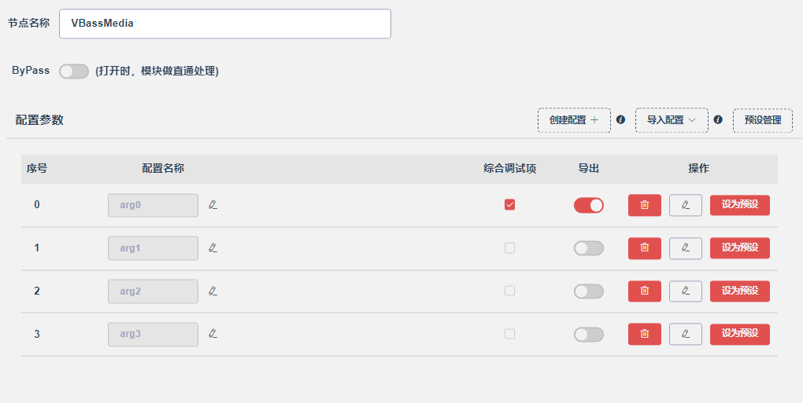
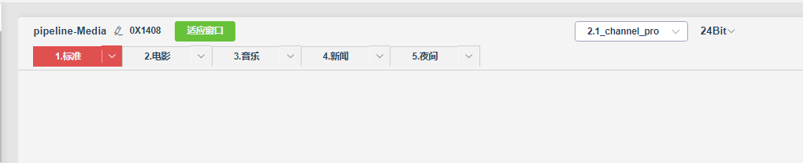

14.1.1. 音效多配置使用说明
14.1.1.1. 功能介绍
14.1.1.2. 节点多配置（配置项切换）
一个音效节点多个配置，根据不同的情景，切换不同的配置，添加配置项后，亦可选择不导出该配置项，节省stream.bin空间。
以vbass_link_volume功能为例，会根据不同的音量等级，使用配置项中的不同参数，配置项的
导出按键需要打开。
//audio_config_def.h 开启宏定义
#define AUDIO_VBASS_LINK_VOLUME 1 //虚拟低音与音量联动调节
//virtual_bass_demo.c 中，为示例代码实现：
void user_virtual_bass_udpate_parm_demo()
{
virtual_bass_param_tool_set cfg = {0};
/*
*解析配置文件内效果配置
* */
char mode_index = 0; //场景模式序号（当前音效流程若无多场景，则mode_index是0）
char *node_name = "VBassMedia"; //节点名称（节点内的第一参数，用户自定义,长度小于等于15byte）
char cfg_index = 0; //目标配置项序号，自行定义的arg0、arg1、arg2等配置项
int ret = jlstream_read_form_data(mode_index, node_name, cfg_index, &cfg);
if (!ret) {
printf("read parm err\n");
return;
}
/*
*将配置文件内获取得到的参数更新到目标节点
* */
jlstream_set_node_param(NODE_UUID_VBASS, node_name, &cfg, sizeof(cfg));
}
14.1.1.3. 音频流多配置（场景切换）
一个音频流程，所有的节点都可能使用不同配置，比如soundbar的电影模式、音乐模式和夜间模式等。

场景可通过以下接口切换：
/* 音乐模式：根据参数组个数顺序切换场景 */
void effect_scene_switch()
/* mic混响：根据参数组个数顺序切换场景 */
void mic_effect_scene_switch()
需要注意的是，在音效流程中自行添加模块后，需要注意模块的命名规则，并将模块添加到场景切换的函数中，示例如下
。
//scene_switch.c 中，为场景切换的代码实现
//混响模块命名规则：模块名 + 混响模式名
static char *mic_name = "Eff";
static char *mic_eq_name[] = {"Eq1", "Eq2", "Eq3", "Eq4", "Eq5", "Eq6"};
......
/* mic混响：根据参数组序号进行场景切换 */
void mic_effect_scene_set(u8 scene)
{
u8 scene_num = get_mic_effect_scene_num();
if (scene >= scene_num) {
printf("err : without this scene %d\n", scene);
return;
}
mic_scene = scene;
char tar_name[16];
......
//将模块名 与 混响模式名进行组合
for (int i = 0; i < ARRAY_SIZE(mic_eq_name); i++) {
sprintf(tar_name, "%s%s", mic_eq_name[i], mic_name);
eq_update_parm(scene, tar_name, 0);
}
......
}
14.1.1.4. 参数获取函数
可通过该函数获取音频流程不同场景（mode_index）的具体某一个节点的不同配置项（cfg_index）参数。
/*
*表单节点参数获取
*mode_index:参数组序号（模式序号）
*name:音效节点名字（节点内用户自定义）
*cft_index:目标配置项（0,1,2....）
*data:目标参数返回地址
*return: 实际长度: 返回成功， 0：返回失败
* */
int jlstream_read_form_data(char mode_index, const char *name, char cfg_index, void *data)